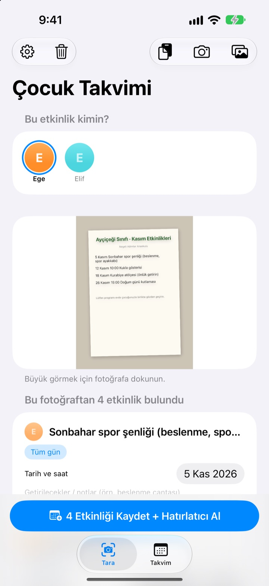
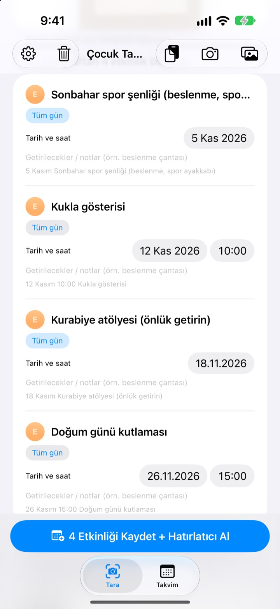
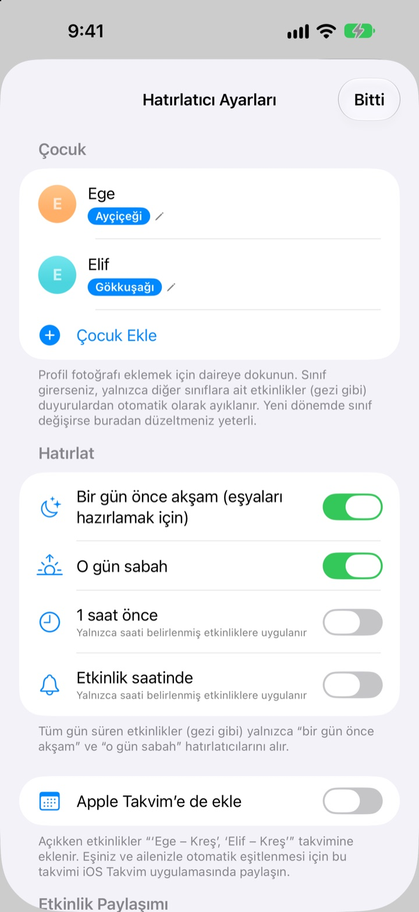
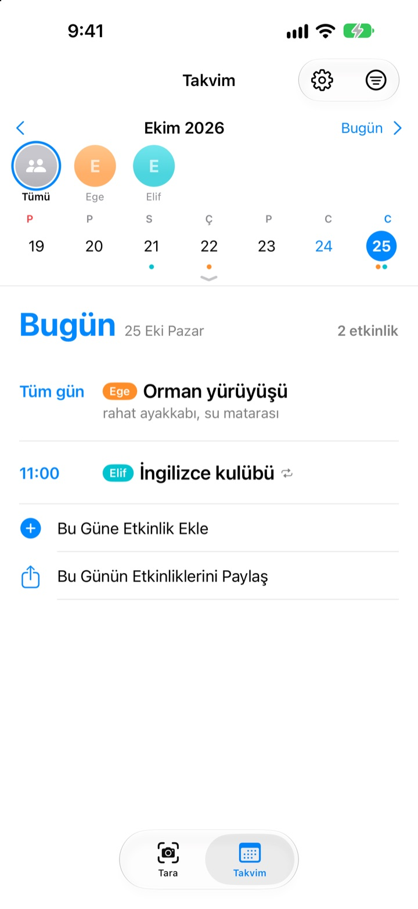

Bir fotoğraf yeter.
Akşamdan hatırlatırız.
Kreşten gelen aylık planın fotoğrafını çek. Çocuk Takvimi tarihleri, saatleri ve etkinlik adlarını okuyup hepsini tek seferde ekler. Geziden önceki akşam saat 20.00'de bir hatırlatma gelir: beslenmeyi unutma.
Tüm özellikler ücretsiz. Fotoğrafların iPhone'undan dışarı çıkmaz.

Bir duyuruyu fotoğrafla
İşte gelecek ayın etkinliklerini anlatan örnek bir duyuru. Fotoğrafını çek; uygulamadaki gibi etkinlikler ve getirilecekler ayıklanır, hatırlatmalar seçtiğin saatlere kurulur.
Kreşin duyurularını hâlâ elle takvime mi geçiriyorsun?
Ayda beş altı etkinlik, her birinde başka bir şey götürmek gerekiyor: beslenme, spor kıyafeti, önlük. Buzdolabındaki plan işe giderken görünmüyor, insanın aklına hep o sabah geliyor. Çocuk Takvimi o kâğıdı takvim etkinliklerine ve hatırlatmalara dönüştürür.
Tek fotoğraf, koca bir ay
Aylık tablo, veli mektubu ya da tek sayfalık duyuru: fotoğrafını çek veya fotoğraf arşivinden seç; tarih, saat ve etkinlik adları senin için okunur. Kreşten gelen mesajı da yapıştırabilirsin; “yarın” ya da “bu cuma” gibi ifadeler gerçek tarihe dönüşür.
Kaydetmeden önce başlığı, tarihi veya getirilecekleri hemen düzeltir, gereksizleri kaydırıp silersin. Çocuğunun sınıfını girersen yalnızca diğer sınıflara ait etkinlikler kendiliğinden elenir.

Bir önceki akşam hatırlatma
Önceki akşam 20.00, o sabah 07.30, 1 saat önce ya da tam saatinde seçeneklerinden seç. Getirilecekler hatırlatmada görünür, çanta eksiksiz hazırlanır.
Apple Takvim'i açarsan etkinlikler çocuğunun adını taşıyan bir takvime girer, hiçbiri iki kez eklenmez.

Birden çok çocuk, bütün aile
Her çocuğun kendi rengi var. Hepsini birlikte ya da tek tek gör; uygulama geçmiş kayıtlara bakıp yeni duyurunun hangi çocuğa ait olduğunu tahmin eder.
Bir davet bağlantısı gönder; eşin, büyükanne ve büyükbaba ya da bakıcı aynı etkinlikleri görüp düzenleyebilir. Ana ekrandaki widget sıradakini gösterir.

Üç adımda başla
- 1
Çocuğunu ekle
Adını ve sınıfını gir. Profil fotoğrafı istediğin zaman.
- 2
Duyuruyu fotoğrafla
Karşıdan ve yazılar net çıkacak şekilde çekersen daha iyi okunur.
- 3
Kontrol et ve kaydet
Bildirimlere izin ver, hatırlatmalar seçtiğin saatte gelsin.
Hatırlatmalar ne zaman gelir
- Önceki akşam 20.00
- Eşyaları hazırlamak için. Baştan açık
- O sabah 07.30
- Bugünün programı. Baştan açık
- 1 saat önce
- Yalnızca saati olan etkinliklerde
- Etkinlik saatinde
- Yalnızca saati olan etkinliklerde
Gezi gibi tüm gün süren etkinliklerde yalnızca önceki akşam ve o sabahki hatırlatma gelir. Her birini ayarlardan istediğin zaman açıp kapatabilirsin.
Tüm özellikler ücretsiz
Ücretsiz
- Fotoğraf ve mesajlardan etkinlik okuma
- Kaydetmeden önce düzeltme, diğer sınıfları eleme
- Önceki akşam, sabah, 1 saat önce ve tam saatinde hatırlatma
- Her çocuğa bir renk ve ortak takvim
- Apple Takvim ile eşzamanlama
- Davet bağlantısıyla aileyle paylaşma
- Ana ekran widget'ı
Geliştiriciyi destekle
- Ayarlardan dilediğin kadar küçük bir bahşiş gönderebilirsin
- Bahşiş hiçbir şeyin kilidini açmaz. Uygulama aynen çalışır
Reklam yok, abonelik yok.
Sık sorulan sorular
Hangi fotoğraflar okunuyor?
Tablo şeklindeki aylık takvimler, düz metin olarak yazılmış duyurular ve tek sayfalık bildiriler ya da broşürler. Karşıdan, yazılar net çekilmiş fotoğraflar daha iyi okunur. Birkaç fotoğrafı seçip aynı anda tarayabilirsin.
Bazı etkinlikler eksik ya da bir başlıkta yazım hatası var.
El yazısı ya da soluk yazılar zor okunabilir. Başlığı, tarihi veya getirilecekleri doğrudan listede düzelt, gerekmeyenleri kaydırıp sil. Eksik bir etkinliği Tara sekmesindeki “Etkinliği Elle Ekle” ile ekleyip yeniden kaydet.
Hatırlatma gelmiyor.
Ayarlar > Bildirimler > Çocuk Takvimi bölümünde bildirimlere izin verildiğini kontrol et. Uygulamanın ayarlarından (⚙️) hangi hatırlatmaları almak istediğini de seçebilirsin.
Diğer sınıfların etkinlikleri de geliyor.
Ayarlara çocuğunun sınıf adını gir; yalnızca diğer sınıflara ait etkinlikler elenir. Yeni dönemde sınıf değişirse sadece orayı güncellemen yeterli.
Birden fazla çocuğum var.
Ayarlardan istediğin kadar çocuk ekleyebilir, her birine profil fotoğrafı koyabilirsin. Tararken etkinliklerin kime ait olduğunu seç: takvimde her çocuğun kendi rengi olur, ortak görünümle çocuk bazlı filtre arasında geçiş yapabilirsin.
Takvimi eşimle nasıl paylaşırım?
Ayarlardaki “Etkinlik Paylaşımı” bölümünde “Davet Et ve Paylaş”a dokun ve bağlantıyı mesajla gönder. Davet edilen kişi tüm çocukları ve etkinlikleri görüp düzenleyebilir; iki taraftan yapılan değişiklikler hemen ikisinde de görünür. Bunun Apple'ın Aile Paylaşımı ile ilgisi yoktur.
Başka paylaşım yolları var mı?
Takvim sekmesindeki paylaş düğmesiyle Çocuk Takvimi dosyası, takvim dosyası (.ics) ya da metin özeti gönderebilirsin. “Apple Takvim'e de ekle” açıkken çocuğunun adını taşıyan bir takvim oluşur; bunu Takvim uygulamasında iCloud üzerinden paylaşırsan aile de güncel kalır.
Fotoğraflarım ya da etkinliklerim bir yere gönderiliyor mu?
Hayır. Fotoğraflardaki yazılar tamamen cihazında okunur ve veriler yalnızca orada saklanır. Etkinlikler yalnızca “Etkinlik Paylaşımı” ile birini davet ettiğinde iCloud'un üzerinden ve sadece davet ettiğin kişilere gider.
Bir sorun mu var ya da bir özellik mi istiyorsun? leeo@kakao.com adresine yaz. Genellikle 2–3 gün içinde yanıt veriyoruz. Cihaz modelini ve iOS sürümünü yazarsan çok yardımcı olur.